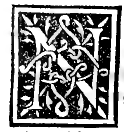
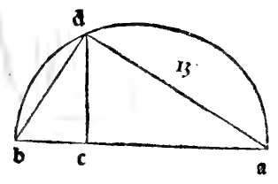
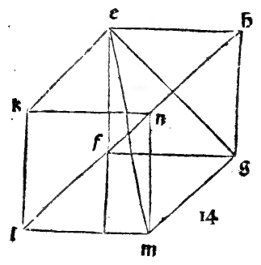
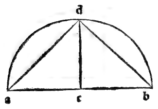

CAPITOLO XXVIII¶
Commo se formi lo octocedron in spera aponto collocabile e sua proportione ala spera.

Nel terzo luogo sucede in fabrica el corpo de 8 basi triangulari detto octocedron qual similmente da vna proposta sphera sia aponto circumdato dcia qual spera solo et diametro anoi sia noto. E fasse in questo modo. Prendase el diametro dela sphera qual sia la linea ab. la quale se diuida per equali nel ponto e. E sopra tutta la linea se facia el semicirculo adb. e tirise ed. perpendiculare ala linea ab. edapoi se gionga el ponto d. con le extremita del ditto diametro cioè con a. e con b. Dapoi faciasse vn quadrato de qual tutti li lati sienno equali a la linea bd. E sia questo quadrato efgh.
E in questo quadrato setiri doi diametri deli quali luno sia eg e laltro fh. Li quali fraloro se diuidino nel ponto k. Onde per la quarta del primo fia manifesto che cadauno de questi diametri equale ala linea ab. la quale fo posta diametro dela sphera conciosia che langulo d. sia recto per la prima parte dela trigesima del terzo. E ancora cadauno deli anguH e. f. g. h. fia recto per la diffinitione del quadrato. E ancora fia manifesto che quelli doi diametri eg. e ‘fh. fra loro se diuidano per equali nel ponto k. E apare per la quinta e trigesima secunda e sexta del primo facilmente deducendo.
Ora leuise sopra k la linea kl. perpendiculare alasuperficie del quadrato, la qual perpendiculare se ponga eqUale ala mita del diametro eg overo fh. E poi se lascino le ypotomisse le If. Ig. Ih. E tutte queste ypotomisse per le cose diete e prosuposte mediante la penultima del primo replicata quante volte fia bisogno fraloro siranno equali. E ancora equali ali lati del quadrato. Adonca finqua habiamo vna piramide de 4 basi triangulari de lati equali constituta sopra el dicto quadrato la qual piramide fia la mita del corpo de 8 basi quale intendemo. Dapoi sotto dicto quadrato faremo vnaltra piramide simile aquesta in questo modo cioè.
Tiraremo la dieta linea Ik. forando epenetrando el dicto quadrato fin al ponto m in modo che la linea km. laqual sta sotto el quadrato sia equale ala linea Ik laqual sta desopra dicto quadrato. E da poi giognero el ponto m. con tutti li anguli del quadrato tirando 4 altre linee ypotumisali le quali sonno me.mf.mg.mh. Equeste ancora se prouano esser equali fraloro e ancora ali lati de ditto quadrato per la penultima del primo e laltre sopra aducte commo fo prouato de laltre ypotumisse sopra al quadrato.
Ecosi sempre con diligentia obseruate le sopra diete cose sira finito el corpo de 8 basi triangulari de lati equali el quale apunto sira dala spera circumscripto. La proportione fra la spera el dicto corpo sie chel quadrato del diametro dela spera al quadrato dellato de dicto corpo fia dopio aponto cioè sei dicto diametro fosse 8 el lato del octobasi seria R. 32. lecui potentie fraloro sonno in dupla proportione cioè chel quadrato del diametro fia dopio al quadrato dellato del dicto corpo e cosi habiamo la fabrica eia proportione respecto la spera etc.
Marginal Woodcut Diagrams (Paganini 1509)¶

Folio 0033 Diagram 3¶

Folio 0033 Diagram 4¶

Folio 0034 Diagram 1¶